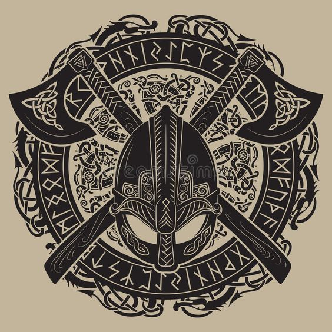
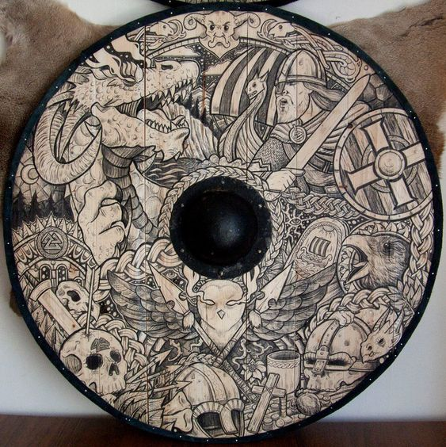

Project Viking is a 3rd person extreme melee action game. Based on the information from the developer(teamJoker), it has been developed by 2 people so far. Now they are hiring more colleages who has talant in his/her field.
In terms of game story, player is gonna be one of the male viking who just came back from the war with critical wound on his head and now he can see mysterious things around world.
A hardcore melee action with well designed combat system. The main idea for combat is, defeat enemies with adrenaline gage which will be decreased when player doesn't do anything but if the player kills enemy or parrys enemys attack then the gage is charged certain amounts.
Player consumes x amount of the gage when player character performs skills which can defeat enemies quickly. Managing the adrenaline gage would be the key for combat in this game.
